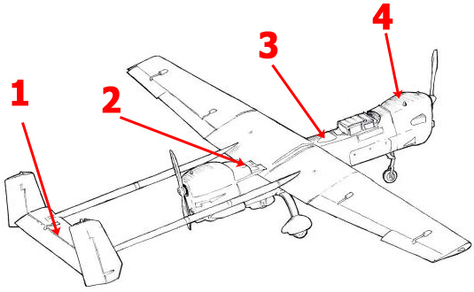
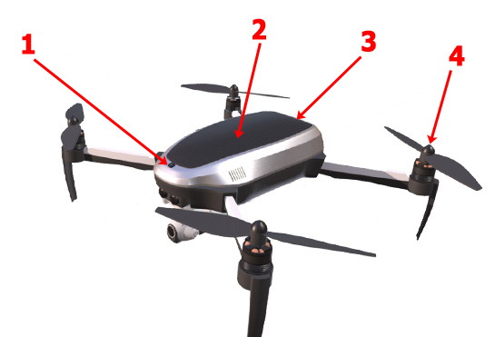

Batteries
Effet mémoire
Lithium- L'effet mémoire affecte particulièrement les batteries :
NiCD - L'effet mémoire affecte particulièrement des batteries :
Soumises à des cycles de charge et de décharge très réguliers. c'est rare, perte de capacité irréversible. - Les batteries LiPo :
Ne sont pas sujettes à l'effet mémoire.
- La puissance que peut délivrer une batterie à un certain courant pendant un certain temps est appelée :
La capacité. - La capacité de décharge maximale d'une batterie :
Est un point important qui permet de délivrer un courant supérieur à la capacité de la batterie pendant une durée réduite. - Vous avez une batterie marquée 5C 1500 mAh, quelle est sa capacité de charge maximale ?
7,5 A. - L'indice «C-rate» d'une batterie Li-Po correspond :
Au courant appliqué sur la capacité. C-rate (régime de charge/decharge) = I / Capacité
- La proposition fausse concernant le processus de charge d'une batterie Li-Po ou Li-ion est :
Le chargement peut se faire sans sortir la batterie de l'UAS.
- Les batteries au lithium sont considérées comme :
Des marchandises dangereuses. - Les avantages d'une batterie au Lithium sont notamment :
Une durée de vie importante et un nombre de cycle d'utilisation élevé. - Quel inconvénient les batteries au lithium présentent-elles ?
Possibilité d'éclatement en cas de surcharge. - L'utilisation d'une batterie au lithium par des températures extérieures froides ou négatives...
Entraîne une baisse de l'autonomie. - La réponse la plus adaptée à un emballement thermique d'une batterie au lithium est de :
Se protéger et arroser abondamment la batterie avec de l'eau. - Les batteries au lithium accumulent de l'énergie qui est restituée ensuite sous forme d'énergie électrique par ...
Une réaction électrochimique.
- L'acronyme NiMH sur une batterie signifie :
Nickel-hydrure métallique. - Pour être rechargée, une batterie NiCD :
Devrait auparavant avoir été entièrement déchargée. - L'acronyme «NiCD» sur une batterie signifie :
Nickel-cadmium. - Une batterie au plomb présente l'avantage d'être peu couteuse, mais elle a...
Une densité énergétique faible.
Masse et centre de gravité
- Sur ce drone de type avion, la position la plus adaptée pour ajouter une charge (capteur, caméra, etc..) est celle qui porte le numéro
3

CG
- Sur un drone de type multi-rotor comme celui présenté sur la photo, le centre de gravité (CG) se situe très probablement à l'endroit indiqué par la flèche numéro :
2

- Le sigle «CG» que l'on retrouve sur les abaques de domaine de vol, signifie
Centre de Gravité.
- Si la charge utile est constituée d'un liquide qui sera pulvérisé au cours de la mission, l'incidence sur le vol la plus probable sera :
Une réduction continue de la puissance nécessaire au vol, une stabilité de vol diminuée. - Les éléments qui constituent la charge utile d'un aéronef sans équipage à bord sont : 1 - le capteur d'images ; 2 - la nacelle ; 3 - les batteries ; 4 - les systèmes électroniques de vol embarqués. Choisissez la réponse exacte la plus complète.
1, 2 - La charge utile d'un UAS doit être correctement fixée pour :
Prévenir sa chute ou tout mouvement inopiné entrainant une sortie du domaine de vol.
- Le centre de gravité d'un aéronef :
Peut être déplacé entre des limites définies. - Le centre de gravité est :
Le point où on considère que toutes les masses de l'UAS s'appliquent. - Pour un aéronef multi-rotor sans équipage à bord, un centre de gravité (CG) situé relativement bas par rapport à son axe vertical...
Le rendra très stable. - Le centrage d'un aéronef sans équipage à bord dépend du (ou des) paramètre(s) suivant(s) :
Poids et répartition des charges transportées (caméra, équipement) et des batteries. - Si les autres facteurs restent inchangés, l'autonomie d'un UAS à ailes fixes (type avion) est :
Inférieure avec un centre de gravité avant.
- Le dépassement de la masse maximale autorisée de votre UAS peut entraîner :
Une diminution de l'efficacité du contrôle de vol dans certaines configurations. - La masse en mouvement d'une caméra dotée d'un objectif déporté montée sur un stabilisateur (gimbal) génère :
Des oscillations qui peuvent avoir une forte incidence sur la stabilité du vol. - La masse maximale au décollage (MTOM) d'un UAS est une limitation :
Structurelle
Limites
- Pour connaître les limites techniques d'utilisation de votre UAS, vous utilisez :
Le manuel d'utilisation.
- Les limites d'exploitation du domaine de vol d'un UAS :
Doivent toujours être respectées. - Le basculement dynamique d'un aéronef sans équipage à bord de type «multi-rotor» ou «hélicoptère» est :
Le renversement de l'aéronef provoqué par le blocage du train d'atterrissage avec un obstacle au sol. - Pour des paramètres de pression atmosphérique et de température inchangés, à quelle altitude les performances de votre aéronef sans équipage à bord seront maximales :
Au niveau de la mer